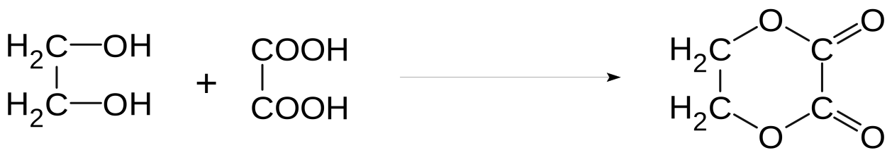

有机合成概述
高分子概述
有机高分子
高分子化合物，简称高分子，相对分子质量通常在几万到几十万，甚至达到几千万。高分子虽然相对分子质量很大，但结构往往并不复杂。

高分子的性质：
在溶剂中的溶解。
高分子溶解在有机溶剂中，溶剂分子先深入缠在一起的线性高分子之间，使高分子材料膨胀，然后把高分子包围起来，使其分离开来，能够自由移动，在有机溶剂中形成胶体粒子，成为溶胶。
不同温度下的性能。
热塑性：高分子受热到一定温度范围，开始软化，直到熔化成流动的液体，不像固态小分子物质那样有确定的熔点。加热软化后，可以加工成各种形态。
热固性：网状结构中的高分子链已有化学键相互交联，限制了其移动。当温度更高，体系高分子的化学键出现断裂，高分子的结构就被破坏。一经加工成形，就不会受热融化，如酚醛塑料。
强度和电绝缘性。
高分子材料的密度比金属小，但强度可能比较大。
大部分有机高分子材料是绝缘的，但也有导电的，如单双键交替的碳链。
高分子材料
三大天然有机高分子：淀粉、纤维素、蛋白质。
三大合成材料：塑料、合成纤维、合成橡胶。
塑料：
例如：合成树脂，如聚乙烯、聚氯乙烯、聚四氟乙烯。树脂的含义是未加工的处理物。
聚乙烯制成的塑料是热塑性塑料，而酚醛树脂等只能一次成形，是热固性塑料。具有网状结构的高分子受热都不能软化或熔融，也不溶于 任何溶剂。
聚四氟乙烯：塑料王，除熔融的碱金属和液氟外，几乎不受任何化学试剂的腐蚀，甚至放在王水中煮沸，其性能也不会发生改变。
不能用含增塑剂的聚氯乙烯薄膜等做食品包装材料。
超高相对分子质量（大于 100 万）的聚乙烯可用作防弹头盔和防弹衣的材料。

橡胶：

合成纤维：
纤维，分为天然纤维（蚕丝、羊毛、棉花、天然纤维纺纱）和化学纤维，其中化学纤维又分为人造纤维（再生纤维）和合成纤维。
棉花、羊毛、蚕丝和麻等是大自然赋予人们的天然纤维。
以木材、秸秆等农副产品为原料，经加工处理可以得到再生纤维。
以石油、天然气、煤、农副产品为原料，将其转化为单体，再经过聚合反应得到的是合成纤维。
功能高分子材料：
聚合反应
加聚反应
聚合反应：
像这样，由相对分子质量小的化合物分子相互结合成相对分子质量大的聚合物的反应叫做聚合反应。乙烯的聚合反应同时也是加成反应，这样的反应又被称为加成聚合反应，简称加聚反应，通常没有副产物生成。
- 单体：能合成高分子化合物的小分子物质，如乙烯（CHX2=CHX2）。
- 链节：聚合物中重复的结构单元，如聚乙烯中的“−CHX2−CHX2−”。
- 聚合度：链节的数目 n。
- 聚合物（高分子化合物）：反应的生成物，如聚乙烯（−[CHX2−CHX2]XnX−）。
经典的加聚反应：
炔烃的加聚：
nCHX2≡CHX2催化剂聚乙炔−[ CHX2=CHX2 ]Xn− 二烯烃加聚：
nCHX2=CH−CH=CHX2催化剂−[ CHX2−CH=CH−CHX2 ]Xn− 烯烃共聚：
nCHX2=CHX2+nCHX2=CH−CHX3一定条件−[ CHX2−CHX2−CH(CHX3)−CHX2 ]Xn−
缩聚反应
由有机化合物分子间脱去小分子获得高分子化合物的反应称为缩合聚合反应，简称缩聚反应。
- 缩聚反应生成聚合物的同时，还有小分子副产物（如 HX2O 等）生成。
- 缩聚反应的单体通常是具有两个或多个官能团（如 −OH,−COOH,−NHX2 等）的小分子。
- 所得聚合物链节的化学组成与单体的化学组成不同。
经典的缩聚反应：
酚醛树脂的合成：


羟基酸缩聚：
醇酸缩聚：


氨基酸缩聚：
nHX2N(CHX2)X5COOH一定条件H−[ NH(CHX2)X5CO ]Xn−OH+(n−1)HX2O
结构判断
加聚产物单体判断：要先判断高分子化合物是加聚产物还是缩聚产物。
缩聚产物单体判断：中学里缩聚产物形成的方式有三种：聚酯式、聚酰胺式、酚醛树脂式，从形式上看都是脱水缩合。
正合成分析法：采用正向思维方法，从已知原料入手，找出合成所需要的直接或间接的中间体，逐步推向待合成的有机物。其思维程序是：原料→中间体→产品。
逆合成分析法：采用逆向思维方法，从产品的组成、结构、性质入手，找出合成所需要的直接或间接的中间体，逐步推向原料。其思维程序是：产品→中间体→原料。
类比合成分析法：比较题目所给有机合成路线及已知信息反应，找出原料与合成物质的内在联系，确定中间产物，最后得到目标产物——产品。

碳骨架构建
碳链延长
炔醛酮与 HCN 的加成反应：
乙炔HC≡HCHCN丙烯腈HX2C=CH−CNHX2O(HX+)△CHX2=CH−COOH (CHX3)X2C=OHCN(CHX3)X2CH−CNHX2O(HX+)△(CHX3)X2CH−COOH CHX3CHOHCNCHX3(OH)−CNHX2CHX3OH−CHX2NHX2 炔烃和醛发生加成反应：
R−CH≡CHX2+RX′CHOR−C≡C−CH(OH)−RX′ 卤代烃与氰化钠：
CHX3CHX2BrNaCNCHX3CHX2CNHX2O(HX+)CHX3CHX2COOH 羰醛缩合反应：
羰基化合物分子中在羰基邻位碳原子上的氢原子（α−H）受羰基吸引电子作用的影响，具有一定的活泼性，分子内含有 α−H 的醛在一定条件下可以发生加成反应，生成 β-羟基醛，该产物易失水，得到 α,β-不饱和醛。

乙醛拥有三个，因此可以发生三次羟醛缩合反应。
部分信息题会跳过羟基醛的步骤，直接得到不饱和醛。
格氏试剂：
CHX3CHX2MgBr⎩⎨⎧ROH or HX2OCHX3BrCOX2 or HX2O/HX+HCHO or HX2O/HX+CHX3CHX3CHX3CHX2CHX3CHX3CHX2COOHCHX3CHX2CHX2OH 卤代烃与醇钠反应实现不对称醚的合成：
烷基化反应（傅列德尔-克拉夫茨反应）：
芳烃在无水 AlClX3 等路易斯酸的催化下，苯环上的氢被烷基取代的反应：
CX6HX6+R−ClAlClX3CX6HX5R+HCl 反应机理如下：
R−Cl+AlClX3RX++AlClX4X− CX6HX6+RX+CX6HX5R+HX+ 在烷基化反应中，进攻苯环的亲电试剂为烷基碳正离子。
在催化剂作用下产生碳正离子的化合物，如卤代烃、烯烃、环氧乙烷和醇均可作为烷基化试剂。AlClX3 是烷基化反应中活性最高的催化剂，此外，FeClX3、ZnClX2、HF、HX2SOX4 也可作为催化剂。
碳链缩短
高锰酸钾氧化：
氧化醇。
氧化醛和酮。
氧化烯烃、炔烃。
氧化芳香烃（如甲苯）。
酯的水解：
成环反应
狄尔斯-阿尔德反应：
共轭二烯烃与含碳碳双键（或三键）的化合物在一定条件下反应，得到环加成产物，构建了环状碳骨架，该反应用于构建六元碳环骨架。
理解：共轭二烯烃（如 1,3-丁二烯）的两根双键各自打开一半，与含亲双烯体（在这里是丙烯酸）的碳碳双键发生加成反应，两个“半截键”与原来的单键共同形成了新的双键，得到了环加成产物，构建了环状碳骨架。
酯化成环：如二元酸与二元醇的酯化反应、羟基酸的酯化反应。
二元醇成环：

二元羧酸成环：

氨基酸成环：

官能团的转化
引入官能团
引入碳碳双键：
卤代烃的消去反应。
CHX3CHX2Br+NaOH乙醇△CHX2=CHX2↑+NaBr+HX2O 醇的消去反应。
CHX3CHX2OH浓硫酸170 ∘CCHX2=CHX2↑+HX2O
引入碳卤键：
引入羟基：
烯烃与水的加成反应。
醛、酮与氢气的加成。
卤代烃在碱性条件下水解。
CHX3CHX2Br+NaOHHX2O△CHX3CHX2OH+NaBr 酯的水解。
通过硼氢化钠引入羟基或醛基。
CHX3CHONaBHX4CHX3CHX2OH
引入醛基或羰基：
醇的催化氧化。
2CHX3CHX2OH+OX2Cu/Ag△2CHX3CHO+2HX2O 含碳碳三键的物质与水加成。
HC≡CH+HX2O催化剂△HX2C=CHOH异构化CHX3−CHO 碳碳双键氧化：叔碳变羰基。
引入羧基：
引入酯基：酯化反应、酰基化反应。
改变官能团
消除官能团：
- 通过加成反应消除不饱和键。
- 通过消去、氧化、酯化反应消除羟基。
- 通过加成、氧化反应消除醛基。
- 通过水解反应消去酯基、酰胺基、碳卤键。
改变官能团的种类：

改变官能团的数目：
CHX3CHX2OH消去−HX2OCHX2=CHX2加成+ClX2Cl−CHX2−CHX2−Cl水解HO−CHX2−CHX2−OH 改变目标官能团的物质：通过不对称烯烃与卤化氢的加成改变官能团的位置（运用马氏规则）。
CHX3CHX2CHX2Cl消去−HClCHX3CH=CHX2加成+HClCHX3−CH(Cl)−CHX3 保护官能团
含有多个官能团的有机化合物在进行反应时，非目标官能团也可能受到影响，此时需要将受影响的官能团保护起来，先将其转化为不受该反 应影响的其他官能团，反应后再将受影响的官能团复原。
羟基的保护：合成反应会影响羟基，无法直接转化。
R−OH保护基R−O−RX′合成反应RX′′−O−RX′脱保护基RX′′−OH 如果体系受强碱影响，就用成醚反应保护，如果要受氧化，就要用酯化反应保护。
如果是酚羟基，也可以先用氢氧化钠变为 −ONa，然后再酸化还原出酚羟基。
碳碳双键的保护：
碳碳双键易被氧化，在氧化其他基团前，可通过与卤素单质、卤化氢等加成的方法先将碳碳双键保护起来，待氧化其他基团后，再通过消去反应（NaOH 醇溶液，加热）重新转化为碳碳双键。
羧基：羧基遇到高温容易脱羧。